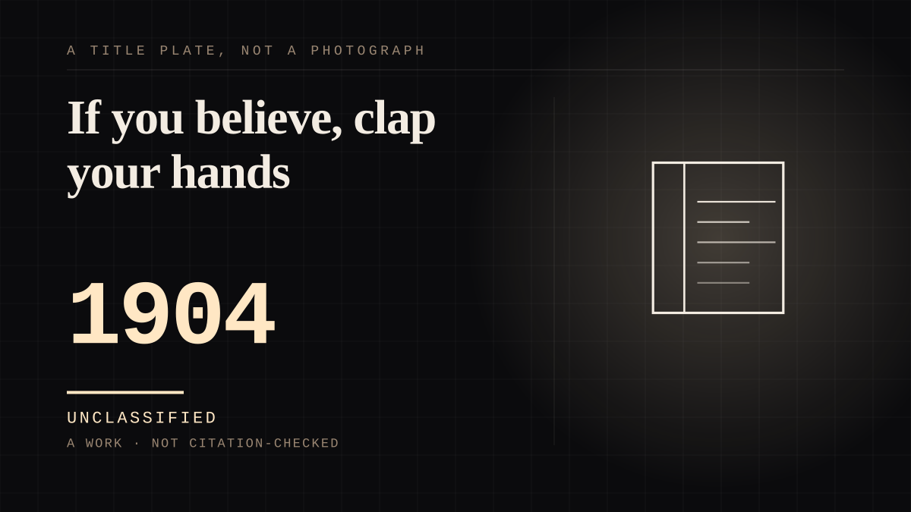

A work · 1904 ·
If you believe, clap your hands
The play that asks the whole audience to save a dying fairy by clapping - and has received the same answer, in the same room, for more than a century.

The audience is asked to save a life, out loud, and every night it does. Peter Pan premiered at the Duke of York's Theatre on 27 December 1904, produced by Charles Frohman, with Gerald du Maurier doubling as Captain Hook and Mr. Darling and Nina Boucicault in the title role - a woman as the boy, which then became the tradition. Near the end, Tinker Bell drinks the poison that was meant for Peter, and Peter turns outward, to 'the boys and girls of whom he is not one': 'Do you believe in fairies? Say quick that you believe! If you believe, clap your hands!' The published text carries the result as a stage direction - many clap, some don't, a few hiss, but Tink is saved - and Barrie had not trusted the audience to produce it: members of the orchestra were stationed to clap if the public declined, which a Smithsonian centenary account calls 'an unnecessary precaution'. The fourth wall is not broken here; it is made load-bearing. For one minute a night, the survival of a fiction depends on real strangers in a real room choosing to believe in public - the one moment in this corpus when the audience's feeling is not inferred from sales or letters but is itself the plot. And the gesture outlived the production it was written for: clapping for Tinker Bell is now a habit of the theatre rather than a request from a stage. The clap is not a metaphor for belonging. It is the price of the ticket, paid in belief, with the house lights down.
Where it sits
1900 1900-1949 · 1904 1949
Provenance · 5 source record(s)
- retrievablePremiere 27 December 1904 at the Duke of York's Theatre, London, with Nina Boucicault as Peter and Gerald du Maurier as Captain Hook and Mr. Darling; the play script published in 1928 as Peter Pan; or, The Boy Who Would Not Grow Up.Wikipedia. 'Peter Pan (play and novel).' ↗
- retrievableTwo days after Christmas 1904 the play first flew onto the Duke of York's stage; when Tinker Bell lay dying and Peter asked the audience to clap to save her, members of the orchestra were ready to oblige if the public declined - which 'proved an unnecessary precaution'.Allen, Norman. 'Peter Pan Turns 100.' Smithsonian Magazine, December 2004. ↗
- retrievableThe appeal and its stage direction: 'Do you believe in fairies? Say quick that you believe! If you believe, clap your hands! (Many clap, some don't, a few hiss. But Tink is saved.)' - Act IV.Wikiquote. 'Peter Pan.' Quoting Barrie, Peter Pan, Act IV (1904; published 1928). ↗
- retrievableThe world premiere on 27 December 1904 and a reproduction of a review of the production published on 28 December 1904.The British Newspaper Archive. 'The World Premiere of Peter Pan - The Duke of York's Theatre, London, 27 December 1904.' 19 December 2013. ↗
- retrievableThe prelude verbatim: 'Peter rises and throws out his arms he knows not to whom, perhaps to the boys and girls of whom he is not one.' The appeal: 'Do you believe in fairies? Say quick that you believe! If you believe, clap your hands!' The stage direction that follows, in which the Nanas rush to the nurseries, ends: 'But TINK is saved.' (Act IV; book page 122.)Wikisource. 'Peter Pan (1928).pdf/162.' Quoting Barrie, Peter Pan, Act IV (1928 published play text). ↗
CHARACTER The written character
Connected · 2 out, 0 in
It sits in